How I Git
| Author: | Peter Parente |
|---|---|
| Date: | 2010-09-10 |
What is Git?
- A distributed version control system
- A toolkit for dealing with changes
- A bunch of command line utilities
Why do I like git?
- I need some form of version control
- Staging and branching fit my style
- It has that Unix feel
- GitHub is a great service
$ -> ()-:
- I'm working on a large JS code base
- I have to find and fix a bug
- I sprinkle console.log liberally
- I fix the problem
- I want make my fix permanent, not my debug cruft
- I want to share my fix with my team
Psst. Put my money where my mouth is.
Lingo: Local repository
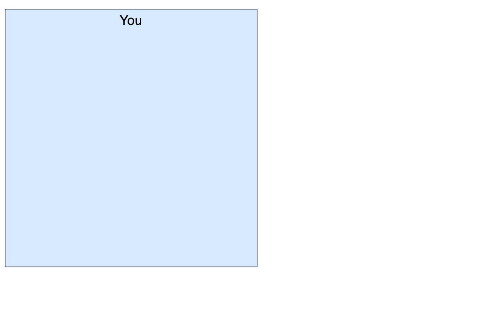Lingo: Remote repository
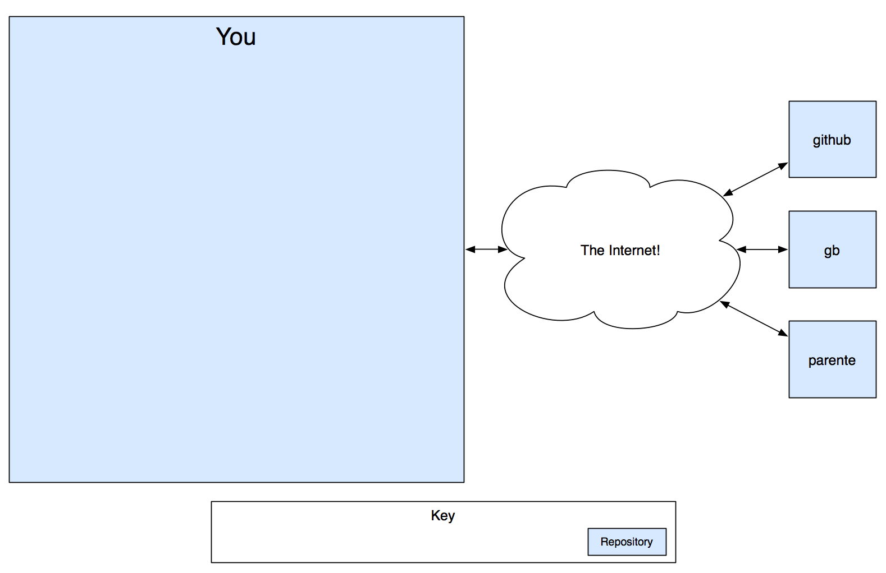Lingo: Working copy
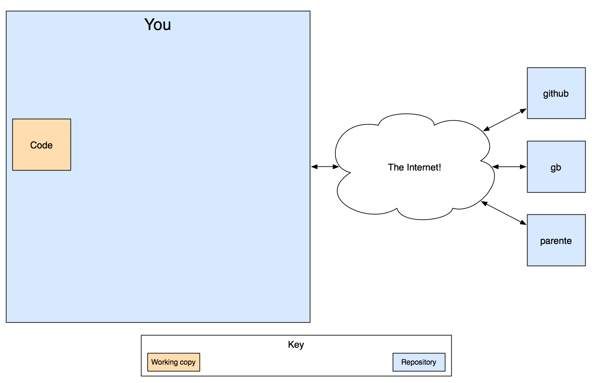Lingo: Stage
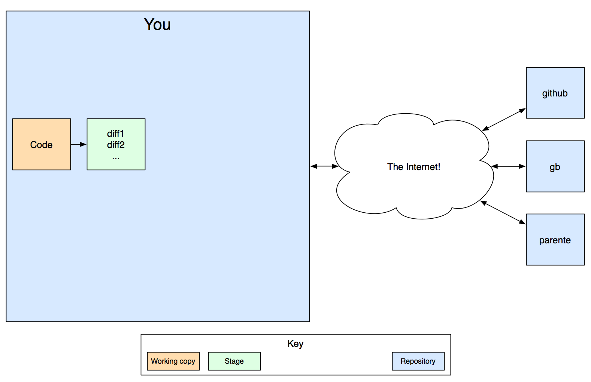Lingo: Commit
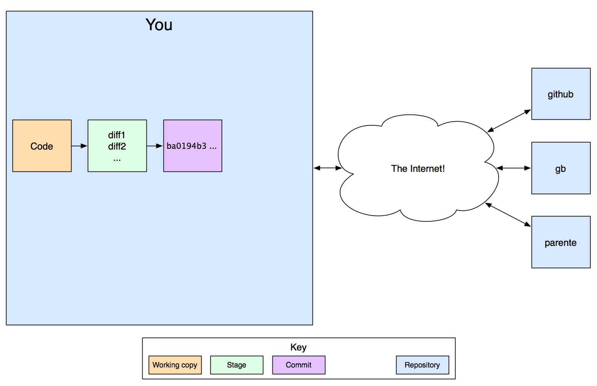Lingo: Commit history
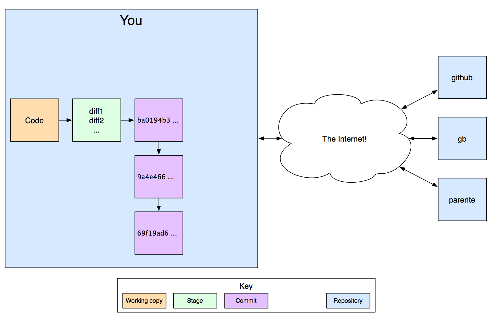Lingo: Branch
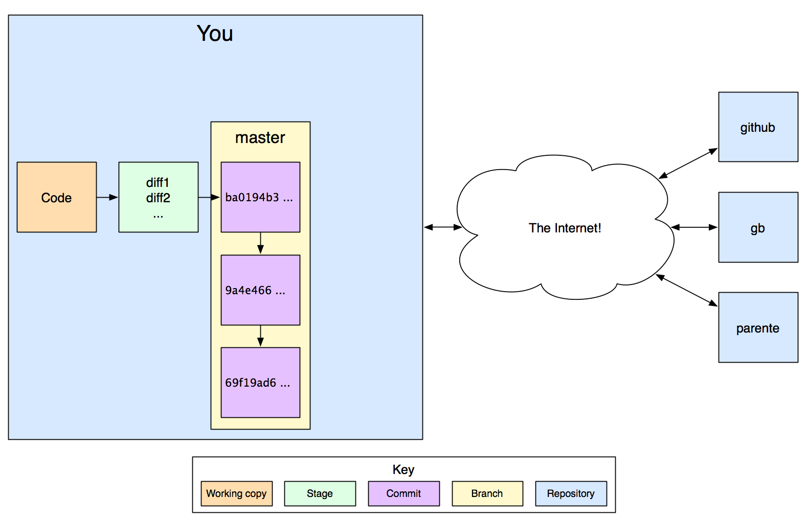Lingo: Branches
Lingo: To stage
Lingo: To commit
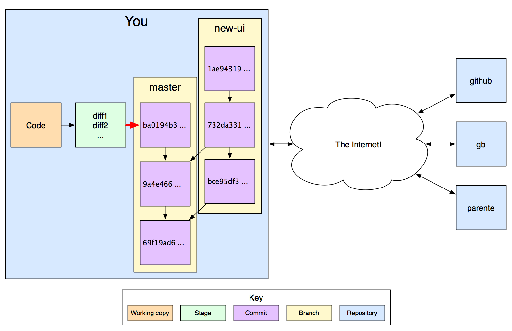Lingo: To branch
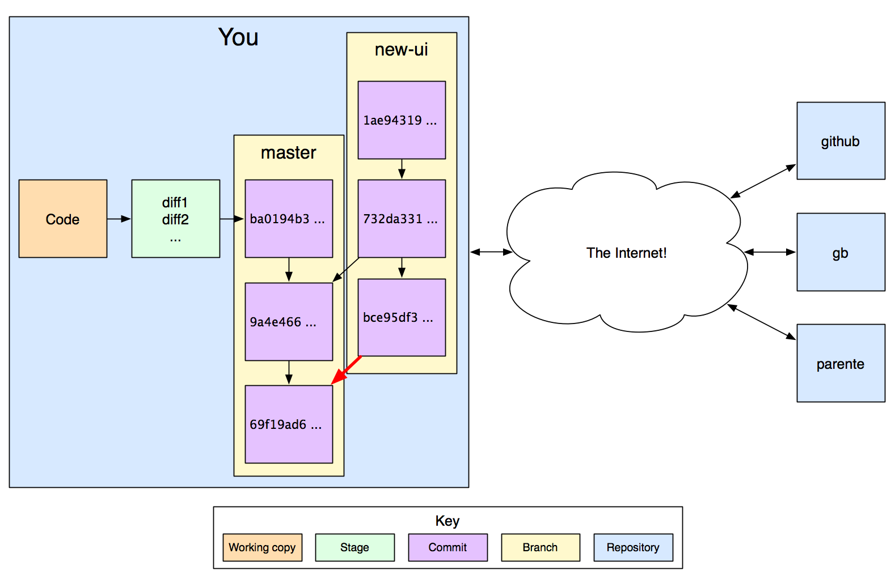Lingo: To merge
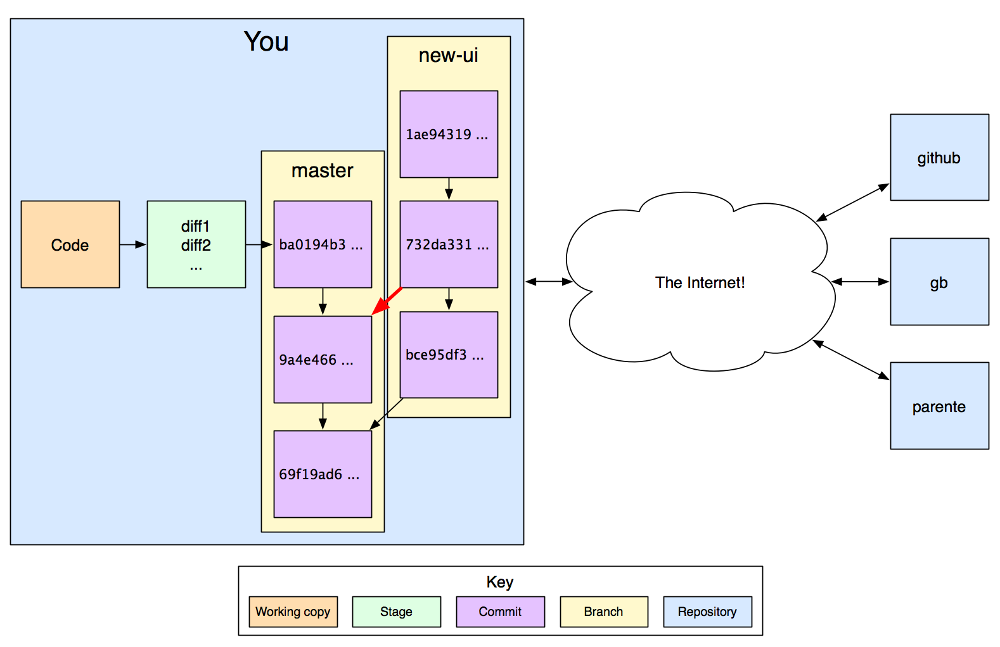Lingo: To fetch
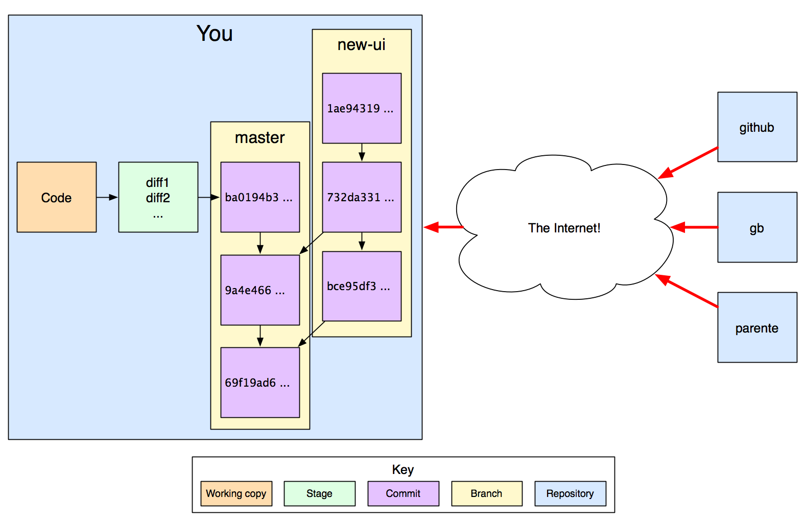Lingo: To push
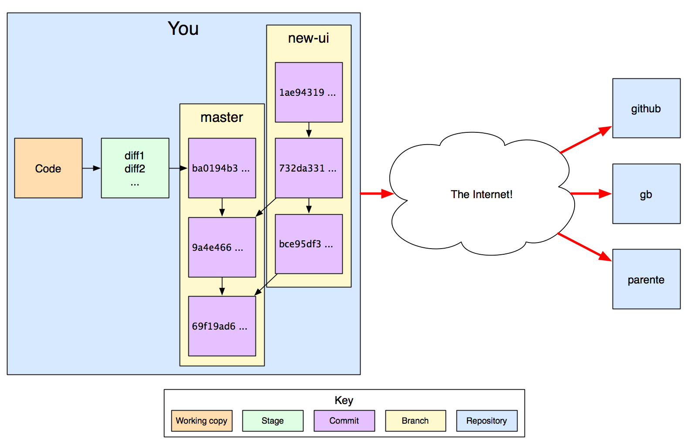How I git started
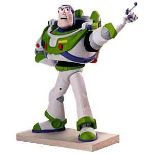- I install git on my machine
- I set my git configuration
- I create or clone a repository
Install git
- Did you do it?
- See http://help.github.com/
Configure git
- Edit ~/.gitconfig
- Set at least your name and email address
- See http://gist.github.com/563331 for my .gitconfig
Create a repository
Make a project folder:
mkdir my_project
Make the folder a repository:
git init
Clone an existing repository
Clone a remote repository in a local folder:
git clone <URL> <folder>
Clone the read/write tutorial repository:
git clone git@github.com:uncopenweb/how-i-git.git
Clone the read-only repository:
git clone git://github.com/uncopenweb/how-i-git.git
How I use git daily
- I write code
- I stage chunks of code
- I commit to master branch
Stage some changes
Mark a whole file as part of a commit:
git add <file>
Unmark a file as part of a commit:
git rm <file> --cached
Mark / unmark chunks interactively:
git add -i
Stage some changes [2]
Check the status of the stage:
git status
Many next steps noted in the output
Read the text!
Commit my changes
Commit staged changes:
git commit
Enter a description of the commit when prompted
View the history of commits:
git log
How I share code on GitHub
- I register for an account on GitHub
- I fetch commits from GitHub
- I merge remote changes into master
- I push my commits to GitHub
Register on GitHub
- GitHub provides free OSS hosting
- Register for an account
- Generate a keypair
- Register the keypair with GitHub
- Again, see http://help.github.com/
Fetch remote changes
Show remote repositories:
git remote show
Get info about a remote repository:
git remote show <remote alias>
Get an update of what happened remotely:
git fetch <remote alias>
Merge remote changes
Merge remote commits into a local branch:
git merge <remote alias>/<branch>
Push local changes
Send local commits to a remote branch:
git push <remote alias> <branch>
How I work on "features"
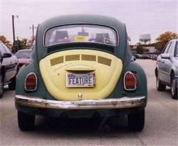- I create a local branch
- I code, stage, commit in the branch
- I switch to other branches as needed
- I merge the branch into master when "done"
- I might push a branch to GitHub
- I might track a branch on GitHub
Create a new branch
Start a local branch for a separate line of work:
git checkout -b <branch>
Commands operate on the new active branch
Switch to a branch
List available branches:
git branch -a
Make a branch active:
git checkout <branch>
Working copy reflects the latest commit on the branch
Commands operate on the activated branch
Merge branches
Merge a local branch into the active branch:
git merge <branch>
Track a remote branch
Start a local copy of a remote branch:
git branch --track <remote alias> <branch>
Stage, commit, push, fetch, etc. to the local branch
Fetch, merge and push between your local branch and the remote
How I deal with problems

- I reset my working copy
- I amend the last commit
- I undo the last commit
- I resolve conflicts during merge
- I fetch and merge before I push
- I stash incomplete work before remote ops
Reset the working copy
Revert all uncommitted changes:
git reset --hard HEAD
Warning: You cannot undo this action!
Amend the last commit
Stage chunks to commit
Commit the staged chunks plus those from the last commit:
git commit --amend
Replaces the last commit with one containing all chunks
Warning: Don't do this if you already pushed the commit!
Undo the last commit
Remove the last commit from the history
Leave the changes in the working copy:
git reset --soft HEAD^
Deal with merge conflicts
- Developers can commit changes at the same time
- git can merge many concurrent changes automatically
- git needs human help when changes overlap
Deal with merge conflicts [2]
- Look at the merge error message
- Open the files with conflicts in an editor
- Search for ====
- Keep the desired lines of code
- Use git add to stage the fixes
- Use git commit to finish the merge
Deal with push errors
Push fails if the local branch is out of date
Bring the local branch up to date:
git fetch <remote alias> git merge <remote alias>/<branch>
How I roll
- I use GitX for add/remove, commit, log (frequent)
- I use the command line for fetch, merge, branch (rare)
- I write shell scripts to automate push and fetch (rarer)
Other features I use
- Multiple remotes
- bash integration
- pull
- rebase
- git-svn
- gitgui, gitk, GitX (Mac)
{kind=link}